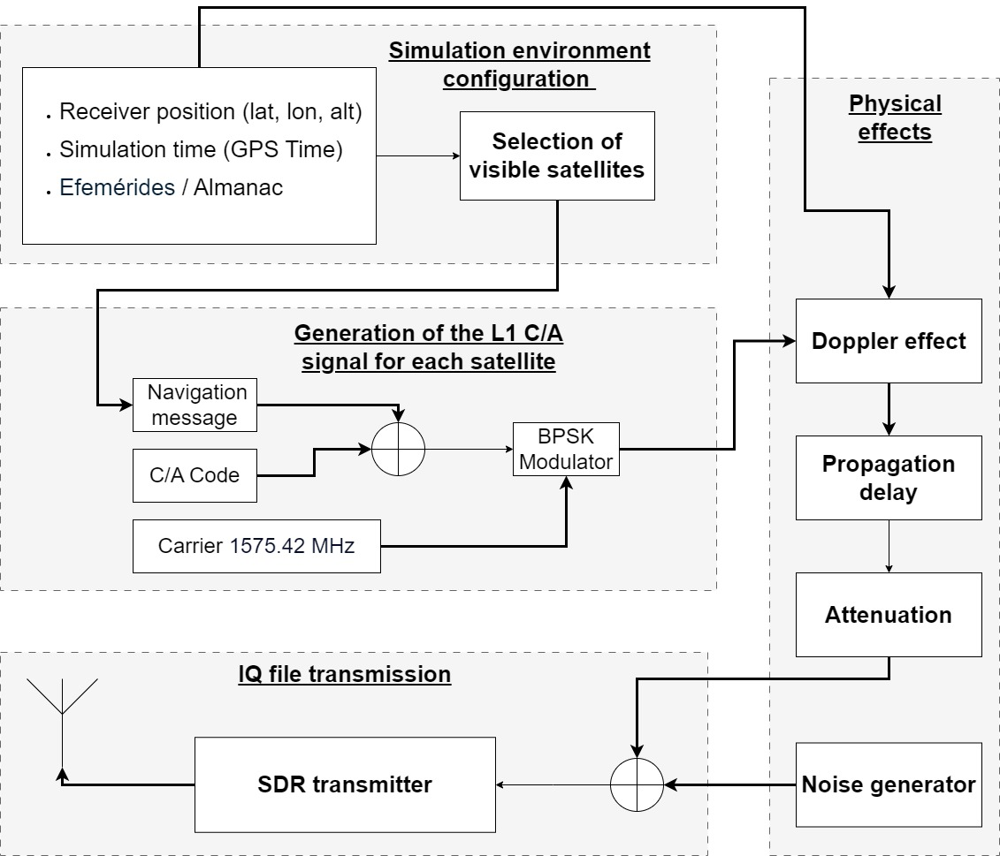

这篇论文围绕GNSS/PNT 接收机以及依赖它的车辆、机器人或授时系统遇到的“外部信号可能被伪造、压制或缓慢拉偏，系统却还会输出看似可信的位置或时间”展开，核心看点是作者把做法落在接收机观测、攻击构造、检测统计量、保护级或轻量模型，也就是先把可观测变量和处理链路说清楚；文本线索：In this way, carefully controlled positioning errors are introduced without causing an abrupt loss of signal, making the attack d...。
1. 先圈题目里的关键词：PNT, GNSS, GPS, spoofing, IMU, VIO, SDR, V2X。它们把文章带到开放环境里的定位、导航和授时链路，后文要追的是外部信号可能被伪造、压制或缓慢拉偏，系统却还会输出看似可信的位置或时间。
2. 摘要给出的第一条线索是：作者先把矛盾压到外部信号可能被伪造、压制或缓慢拉偏，系统却还会输出看似可信的位置或时间这一点上；文本线索：Global navigation satellite systems have become a fundamental infrastructure of modern society, forming the backbone of positioni...。这决定了文章不是只看最终效果，而是在追踪问题怎样发生。
3. 第二条线索落在做法：作者把做法落在接收机观测、攻击构造、检测统计量、保护级或轻量模型，也就是先把可观测变量和处理链路说清楚；文本线索：In this way, carefully controlled positioning errors are introduced without causing an abrupt loss of signal, making the attack d...。读方法时优先找输入、假设、核心运算和输出。
4. 图注里反复出现 GNSS, GPS, IMU, V2X, spoofing，说明主图很可能承载了系统流程、实验设置或结果对比。
读《GNSS Spoofing Threat for V2X communications》时，可以先把主角放在开放环境里的定位、导航和授时链路里：作者先把矛盾压到外部信号可能被伪造、压制或缓慢拉偏，系统却还会输出看似可信的位置或时间这一点上；文本线索：Global navigation satellite systems have become a fundamental infrastructure of modern society, forming the backbone of positioni...。作者接着把镜头推到做法上，重点是作者把做法落在接收机观测、攻击构造、检测统计量、保护级或轻量模型，也就是先把可观测变量和处理链路说清楚；文本线索：In this way, carefully controlled positioning errors are introduced without causing an abrupt loss of signal, making the attack d...。到了实验部分，证据会落在作者用真实设备、回放信号、公开攻击数据、误报漏报、时间误差或部署算力来检验方案，而不是只停在概念解释；文本线索：The experimental assessment is performed on a controlled testbench that integrates commercial vehicular communication devices wit...。最后再回到工程问题：文章最后要回答这件事能否服务于GNSS 可信度评估、融合定位降权、告警策略和完整性监测；文本线索：Both analytical modeling and experimental evaluation demonstrate that GNSS-based synchronization mechanisms used in V2X sys- tems...。这样读下来，论文就不是一堆模块名，而是一条从风险、动作、证据到落地边界的线。
1. 背景和问题：先看矛盾从哪来
这一节先给问题定边界：主角是GNSS/PNT 接收机以及依赖它的车辆、机器人或授时系统，压力来自外部信号可能被伪造、压制或缓慢拉偏，系统却还会输出看似可信的位置或时间。作者先把矛盾压到外部信号可能被伪造、压制或缓慢拉偏，系统却还会输出看似可信的位置或时间这一点上；文本线索：Global navigation satellite systems have become a fundamental infrastructure of modern society, forming the backbone of positioni...。读到这里要抓住两个变量：系统相信了什么输入，以及这个输入在什么条件下会失真。
1. 场景压力：作者先把矛盾压到外部信号可能被伪造、压制或缓慢拉偏，系统却还会输出看似可信的位置或时间这一点上；文本线索：Global navigation satellite systems have become a fundamental infrastructure of modern society, forming the backbone of positioni...。
2. 失效来源：作者先把矛盾压到外部信号可能被伪造、压制或缓慢拉偏，系统却还会输出看似可信的位置或时间这一点上；文本线索：It is estimated that any significant disruption to GNSS services could cause substantial economic losses due to their widespread...。
3. 作者抓住的变量：作者先把矛盾压到外部信号可能被伪造、压制或缓慢拉偏，系统却还会输出看似可信的位置或时间这一点上；文本线索：This strong dependence on GNSS-based positioning, naviga- tion, and timing capabilities makes many sectors of the economy particu...。
4. 这对定位系统的影响：作者先把矛盾压到外部信号可能被伪造、压制或缓慢拉偏，系统却还会输出看似可信的位置或时间这一点上；文本线索：TEC-2024/ECO-277) and Strengthening C-ITS Adoption and Lining-up across Europe (SCALE) funded by CEF-T-2023-SIMOBGEN – 101172496.。
2. 方法拆解：把做法拆成输入、核心动作和输出
方法部分可以拆成三步：先确认输入数据，再看作者怎样构造接收机观测、攻击构造、检测统计量、保护级或轻量模型，最后看输出如何服务于GNSS 可信度评估、融合定位降权、告警策略和完整性监测。作者把做法落在接收机观测、攻击构造、检测统计量、保护级或轻量模型，也就是先把可观测变量和处理链路说清楚；文本线索：In this way, carefully controlled positioning errors are introduced without causing an abrupt loss of signal, making the attack d...。这一步要把每个模块和它消耗的观测量对上号。
1. 输入/观测：作者把做法落在接收机观测、攻击构造、检测统计量、保护级或轻量模型，也就是先把可观测变量和处理链路说清楚；文本线索：4.1 Controlled Testbench for GNSS Spoofing Evaluation To assess the effects of GNSS spoofing on vehicular navigation systems, a c...。
2. 核心步骤：作者把做法落在接收机观测、攻击构造、检测统计量、保护级或轻量模型，也就是先把可观测变量和处理链路说清楚；文本线索：Within the CAPEC (Common Attack Pattern Enumeration and Classification) frame- work [30], a carry-off GNSS spoofing attack is cla...。
3. 模型或检测量：作者把做法落在接收机观测、攻击构造、检测统计量、保护级或轻量模型，也就是先把可观测变量和处理链路说清楚；文本线索：This study focuses on a carry-off GNSS spoofing attack, where counterfeit signals are first synchronized with legitimate GNSS sig...。
4. 输出形式：作者把做法落在接收机观测、攻击构造、检测统计量、保护级或轻量模型，也就是先把可观测变量和处理链路说清楚；文本线索：In this way, carefully controlled positioning errors are introduced without causing an abrupt loss of signal, making the attack d...。
5. 接入方式：作者把做法落在接收机观测、攻击构造、检测统计量、保护级或轻量模型，也就是先把可观测变量和处理链路说清楚；文本线索：Under nominal conditions, the OBU determines its position based on genuine satellite transmissions.。
3. 主图和关键图解：先沿着数据流走一遍

主图：Functional block diagram of the GPS L1 C/A signal simulation and transmis-
这张图围绕信号或时间轴展开。读图时把异常输入、接收机状态和最终告警连起来，看作者是否把外部信号可能被伪造、压制或缓慢拉偏，系统却还会输出看似可信的位置或时间从现象拆成了可测量的变量。图注里的关键词是 GPS, IMU。
论文图：SNR vs
这张图放在后面看细节：它要么补充实验对比，要么解释某个模块的内部变量。读的时候把它和真实设备、回放信号、公开攻击数据、误报漏报、时间误差或部署算力对应起来。
4. 实验验证：看数据、场景和指标是否对得上问题
实验部分要回答“证据够不够”。这篇的证据应落在真实设备、回放信号、公开攻击数据、误报漏报、时间误差或部署算力。作者用真实设备、回放信号、公开攻击数据、误报漏报、时间误差或部署算力来检验方案，而不是只停在概念解释；文本线索：The experimental assessment is performed on a controlled testbench that integrates commercial vehicular communication devices wit...。读表格和曲线时，把数据来源、对比对象、失败场景和指标单位放在一起看。
1. 数据来源：作者用真实设备、回放信号、公开攻击数据、误报漏报、时间误差或部署算力来检验方案，而不是只停在概念解释；文本线索：is defined in which a test vehicle equipped with an OBU drives along a road while receiving GNSS signals.。
2. 实验场景：作者用真实设备、回放信号、公开攻击数据、误报漏报、时间误差或部署算力来检验方案，而不是只停在概念解释；文本线索：Within the CAPEC (Common Attack Pattern Enumeration and Classification) frame- work [30], a carry-off GNSS spoofing attack is cla...。
3. 对比指标：作者用真实设备、回放信号、公开攻击数据、误报漏报、时间误差或部署算力来检验方案，而不是只停在概念解释；文本线索：7 Figure 3: Evaluation testbench for GNSS spoofing attacks in V2X networks.。
4. 结果读法：作者用真实设备、回放信号、公开攻击数据、误报漏报、时间误差或部署算力来检验方案，而不是只停在概念解释；文本线索：This study focuses on a carry-off GNSS spoofing attack, where counterfeit signals are first synchronized with legitimate GNSS sig...。
5. 失败边界：作者用真实设备、回放信号、公开攻击数据、误报漏报、时间误差或部署算力来检验方案，而不是只停在概念解释；文本线索：In this way, carefully controlled positioning errors are introduced without causing an abrupt loss of signal, making the attack d...。
5. 贡献边界和复现：把亮点翻成工程判断
收束部分要看作者把贡献限定在哪里。对工程读者来说，关键不是记住一个新名字，而是判断它能否接到GNSS 可信度评估、融合定位降权、告警策略和完整性监测。文章最后要回答这件事能否服务于GNSS 可信度评估、融合定位降权、告警策略和完整性监测；文本线索：Both analytical modeling and experimental evaluation demonstrate that GNSS-based synchronization mechanisms used in V2X sys- tems...。
1. 主要贡献：文章最后要回答这件事能否服务于GNSS 可信度评估、融合定位降权、告警策略和完整性监测；文本线索：Both analytical modeling and experimental evaluation demonstrate that GNSS-based synchronization mechanisms used in V2X sys- tems...。
2. 适用条件：文章最后要回答这件事能否服务于GNSS 可信度评估、融合定位降权、告警策略和完整性监测；文本线索：and Future Work The results confirm that spoofing attacks against V2X infrastructure are physically fea- sible under realistic op...。
3. 工程收益：文章最后要回答这件事能否服务于GNSS 可信度评估、融合定位降权、告警策略和完整性监测；文本线索：It also demonstrates that these attacks can be carried out without being detected by the system, posing a real cybersecurity thre...。
4. 需要复核的边界：文章最后要回答这件事能否服务于GNSS 可信度评估、融合定位降权、告警策略和完整性监测；文本线索：As illustrated by the results obtained, these attacks are feasible under different test conditions, demonstrating that the V2X co...。
1. 如果把 PNT 换到自己的机器人或车辆平台，最先需要重新标定的是输入数据、阈值，还是传感器外参？
2. 论文里的证据是否覆盖了开放环境里的定位、导航和授时链路里最容易失败的场景，还是只证明了一个受控设置？
3. 这套做法接入GNSS 可信度评估、融合定位降权、告警策略和完整性监测时，应该输出连续可信度、离散告警，还是直接改变优化权重？
图像来自论文 PDF，仅用于论文解读和学术讨论，正式转载前建议核对论文许可和作者要求。